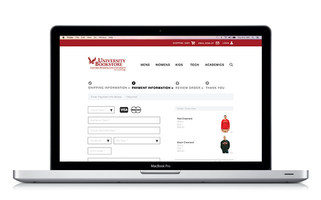
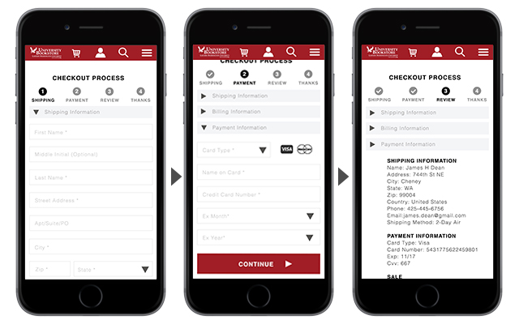

Nooke - UX & UI

THE PROJECT
To design a website for a start-up company out of Spokane to specializes in shipping container homes.
THE GOAL
The major focus was to create a user friendly area on the site that allowed users to customize their own personal container home. We need that this had to be simple, easy to use, and engaging.
THE RESEARCH
I did reasearch to figure out what factors may be leading the site to have high bounce rate, cart abandonment, and low time on pages. Students and alumni where also interviewed to see what the primary needs of our users was.
Major Research Findings
More then 1/4th of online sales are done via mobile phones.
Having more then 5 items on the main navigation leads to customer frustration because of two many options.
The most common item users look for is textbooks.
THE PROCESS
I found out that we needed to reduce the number of options presented to the user on our homepage. Users do not want to bombarded with options. I worked with the information architecture for sometime and decided to reduce the number of options on our home navigation to just 5.
I began this by conducting research on what helps to improve online checkout experiences as well as how to drive up online sales, which was ultimately our goal.
 After figuring out the site structure, I moved into the user flow of our checkout experience. I focused my attention on ensuring that the user would not get confused or have to many unwanted steps. It was also important that the user had a sense of where in the checkout process they were.
After figuring out the site structure, I moved into the user flow of our checkout experience. I focused my attention on ensuring that the user would not get confused or have to many unwanted steps. It was also important that the user had a sense of where in the checkout process they were.


THE SOLUTION
Created a mobile friendly site, because that is very important to our users. I created a step by step check-out process that allows our users to see where in the checkout process they are. This allowed for a seamless checkout. I also presented the user with a order summary at the very end of the process in case they had made any errors. Once completing everything else I moved into wireframing, UI, and prototyping of the website for both desktop and mobile.

